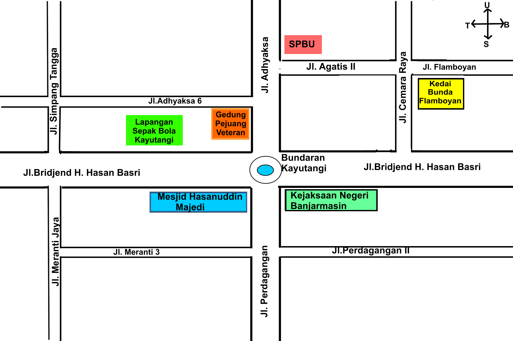
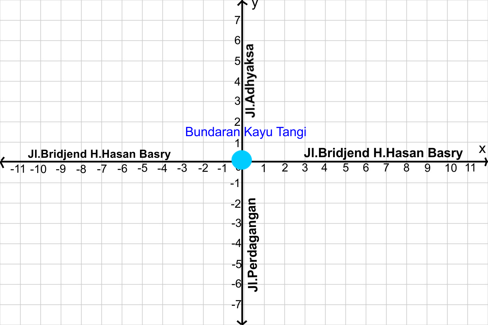

-
Tujuan Pembelajaran:
- Siswa dapat menentukan kedudukan garis sejajar terhadap garis sumbu pada bidang koordinat
- Siswa dapat menentukan kedudukan garis tegak lurus terhadap garis sumbu pada bidang koordinat
- Siswa dapat menentukan kedudukan garis berpotongan terhadap garis sumbu pada bidang koordinat
Setelah mempelajari posisi titik terhadap sumbu XY dan titik acuan. selanjutnya kita akan mempelajari posisi garis terhadap garis sumbu koordinat.

Masalah 3.1 : Perhatikan gambar berikut ini!
Pada denah bundaran Kayutangi Kota Banjarmasin terdapat beberapa nama jalan. Jl.Bridjend H.Hasan Basri, Jl. Flamboyan, Jl.Perdagangan II, Jl. Meranti 3, Jl. Adhyaksa 6, Jl. Agatis II dan Jl.Flamboyan memanjang dari arah timur ke barat. Sedangkan Jl.Adhyaksa, Jl.Perdagangan, Jl. Simpang Tangga, Jl.Meranti jaya dan Jl. Cemara Raya memanjang dari arah utara ke selatan.

Jika Nina berjalan di sepanjang Jl.Adhyaksa 6 dan Tuti berjalan di sepanjang Jl.Perdagangan II. Apakah kedua orang itu mungkin akan bertemu?

Berdasarkan masalah 3.1 kita dapat menentukan :
- Bidang koordinat dari denah bundaran Kayutangi Kota Banjarmasin,
- Jalan yang membentuk sumbu X dan sumbu Y,
- Jalan yang membentuk posisi sejajar antara satu dan lainnya,
- Nina dan Tuti akan saling bertemu atau tidak.

Coba perhatikan denah bundaran Kayutangi Kota Banjarmasin. Jika kita bawa ke bidang koordinat, jalan utama yaitu Jl.Bridjen H.Hasan Basri yang memanjang dari timur ke barat merupakan sumbu X. Jl.Adhyaksa dan Jl.Perdagangan yang memanjang dari utara ke selatan merupakan sumbu Y seperti gambar berikut ini.
Garis disebut sejajar dengan sumbu-x jika setiap titik yang dilalui garis tersebut mempunyai jarak yang sama terhadap sumbu-x.
Garis disebut sejajar dengan sumbu-y jika setiap titik yang dilalui garis tersebut mempunyai jarak yang sama terhadap sumbu-y.
untuk lebih jelasnya mari simak animasi berikut ini, klik tombol mulai untuk memulai animasi
- Klik tombol mulai pada animasi dibawah ini untuk memulai.
- Klik tombol untuk memperbesar layar.
- Jawab pertanyaan dengan masukkan jawaban pada kolom yang tersedia kemudian tekan enter

Kerjakan latihan soal berikut ini!

-
Petunjuk:
- Isikan jawaban anda pada kolom yang kosong.
- Tekan tombol cek untuk mengecek jawaban.
- Tekan tombol 1,2,3,4,5 dibawah soal untuk mengganti ke nomor selanjutnya
Tentukan posisi Apotek, Terminal, Sekolah, Lapangan dan Pasar dengan mengisi kolom yang kosong dibawah ini!